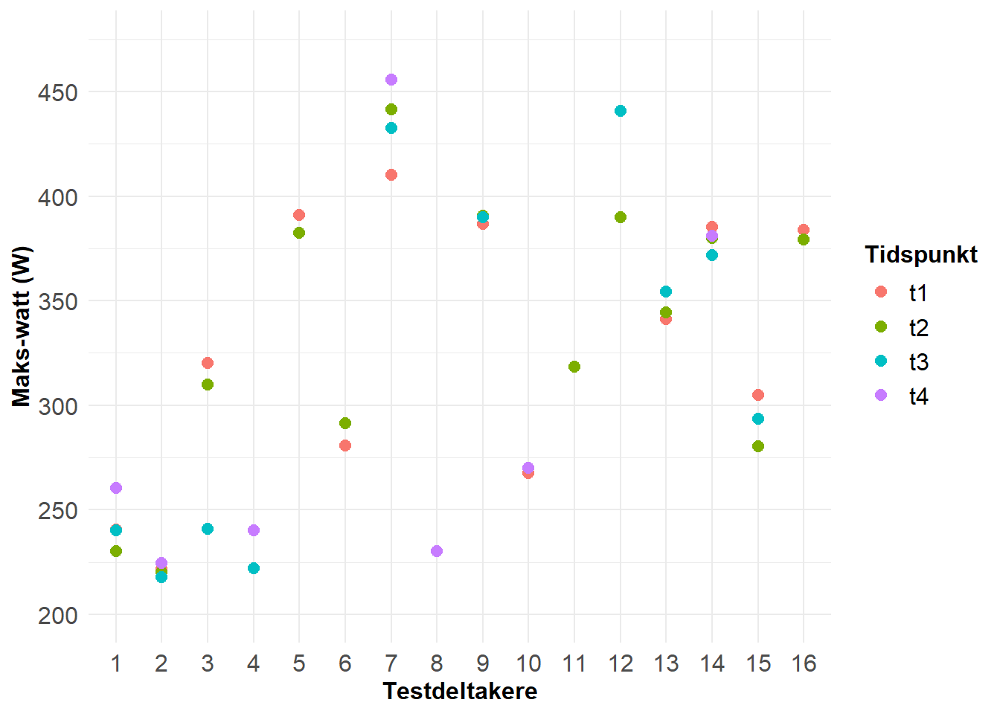

1 Assignment 1: Reliabilitet
1.1 Introduksjon
1.2 Metode
1.2.1 Gjennomføring av \(\dot{V}O_{2max}\) test
Testen som skal gjennomføres er en \(\dot{V}O_{2max}\)-test, der testdeltakeren starter på en forhåndsbestemt wattverdi (motstand). Denne wattverdien økes gradvis hvert minutt, avhengig av den valgte protokollen, og testdeltakeren sykler til en ikke lenger klarer å fortsette. Testen avsluttes dersom deltakerens tråkkfrekvens synker under 60 rpm (rotasjoner per minutt). Under testen skal deltaker forbli sittende på sykkelen.
Testdeltakeren vil få informasjon om hvor lenge de har syklet underveis i testen. Derimot vil de ikke ha tilgang til annen informasjon som puls, \(\dot{V}O_{2}\) eller lignende data underveis. Testlederen vil informere om hvor lang tid det er igjen til neste wattøkning og hvilken watt testdeltakeren sykler på for øyeblikket.
Testlederen vil mot slutten av testen bidra til å pushe testdeltakeren for å få ut det siste av deres kapasitet. Hvordan denne “pushingen” gjennomføres, kan variere mellom testledere, men det er viktig at tilnærmingen til hver deltaker er så konsekvent som mulig. Borg-skalaen (6-20) vil benyttes for å vurdere utmattelsen hos testdeltakeren. Ved testslutt vil deltaker bli bedt om å gi et tall på skalaen, der 6 tilsvarer “ingen anstrengelse” og 20 “maksimal anstrengelse”.
Ett minutt etter testslutt tas en laktatprøve fra testdeltakeren for å estimere maksimal laktatverdi (\(La_{max}\)). Etter at prøven er tatt, noterer testlederen ned hvor lenge testdeltakeren har syklet, og henter deretter ut relevant data fra testen via en rapport fra Vyntus-systemet.
1.2.2 Standardisering
Testdeltakeren skal spise sitt siste store måltid senest 2 timer før teststart. Det er tillatt å innta en mindre karbohydratkilde (eks: banan, energibar, gel) senest 30 minutter før teststart. Koffeininntak skal gjøres som normalt og testene gjennomføres på samme tidspunkt på dagen så godt det lar seg gjøre. Deltakeren anbefales å forsøke å opprettholde sin vanlige døgnrytme gjennom testperioden. For å forberede kroppen på testen, er det viktig at deltakerne ikke gjennomfører hard trening på underekstremitetene dagen før testen.
Oppvarmingen før testen ble satt til 5 minutter, hvor deltaker sykler på økende intensitet i intervaller på 2-2-1 minutt. Eksempelvis 2 minutter på 150W, 2 minutter på 175W og 1 minutt på 220W.
Testprotokollen er den samme for alle tester. Et eksempel på testprotokolle var start på 200W med en økning på 20W hvert minutt til utmattelse. Individuelle tilpasning mtp belastning ble gjort for hver deltaker, både ved oppvarming og testprotokoll.
1.2.3 Intern validering
Både tekniske og biologiske faktorer kan potensielt påvirke resultatene og true den interne validiteten av testen (Halperin, Pyne, and Martin 2015). Ved å beskrive og etablere testprosedyre samt standardisere testen, ønsker vi å skape rammer som sikrer at vi kontrollerer for mulige konfunderende faktorer som kan påvirke testprestasjon. Dette vil bidra til å redusere variasjoner og sikre at resultatene reflekterer faktiske prestasjoner, snarere enn påvirkninger fra ytre faktorer.
Selv om vi har jobbet for å sikre god intern validitet, er det faktorer som vil kunne påvirke resultatene grunnet individuelle forskjeller i måten å opptre som testleder, bruk av musikk, samt humør og mental status til testdeltager (Halperin, Pyne, and Martin 2015).
1.3 Resultater
| Tidspunkt | Watt-maks |
|---|---|
| t1 | 332 (62) |
| t2 | 331 (66.6) |
| t3 | 316 (84.7) |
| t4 | 294 (88.8) |
| Watt-maks verdier er gj.snitt og st.avvik. | |
Den gjennomsnittlige watt-verdien som testdeltakerne holdt de siste 30 sekundene av \(\dot{V}O_{2max}\)-testen var 331.1 (±12.6) og den typiske feilen ble målt til 8.9. Ifølge Hopkins (2000) er den typisk feilen, den gjennomsnittlige variasjonen ved en test. Den typiske feilen gir en indikasjon på den forventede variasjonen ved en retest(Hopkins 2000). I dette tilfellet kan en forvente en variasjon på 2.69 % ved en eventuell re-test.
1.4 Referanser
Halperin, Israel, David B Pyne, and David T Martin. 2015. “Threats to Internal Validity in Exercise Science: A Review of Overlooked Confounding Variables.” Int. J. Sports Physiol. Perform. 10 (7): 823–29.
Hopkins, W G. 2000. “Measures of Reliability in Sports Medicine and Science.” Sports Med. 30 (1): 1–15.